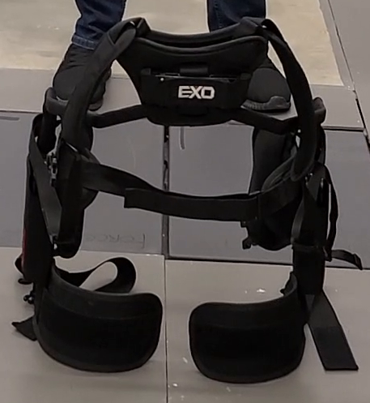
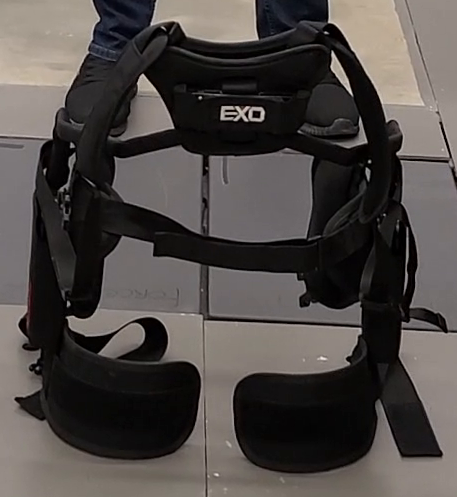

Our research is investigating the use and application of exoskeleton devices as an alternative workplace intervention approach to assist workers with injury and recovering workers return to work timely and safely. We employed digital human modeling and advanced biomechanics tools to characterize and quantify the support provided by the passive support trunk exoskeleton used by injured and recovering workers in the workplace ensuring improved recovery, low risk of musculoskeletal disorders, and early return to work by injured workers for various tasks. Advance biomechanics tools such as digital force plates, EMGs, and analog devices provides the necessary analystical tools the study.
Our pioneering project harnesses the potential of AI-empowered Digital Human Models, integrating cutting-edge technologies like computer vision, to revolutionize exoskeleton design for workers returning to their jobs after injuries. By creating precise and dynamic digital representations of individuals, our approach allows for tailored exoskeleton customization, ensuring ergonomic support and improved biomechanics. We're shaping the future of rehabilitation, with AI-driven DHMs at the forefront, enabling safer and more effective return-to-work strategies for individuals with previous injuries.

OptiTrack systems typically produce less than 0.2 mm of measurement error, even across large tracking areas—even of those 10,000 sq ft or more. In smaller measurement areas, OptiTrack systems regularly produce errors of 0.1 mm or less.
Each part of every OptiTrack system has been designed with measurement accuracy as the principal goal. And now, with OptiTrack’s self calibrating systems, these levels of accuracy are maintained throughout the day, every day, just through the use of the system.
Accuracy in Large Volumes. Learn how The Ohio State University measured the dynamic 3D errors of OptiTrack motion capture systems.
Journal of Biomechanics, Volume 58, 237-240. Alexander M. Aurand, Jonathan S. Dufour, William S. Marras.
The charts of the magnitude moments for various tasks performed with and without the exoskeleton device for the L5/S1 joints which suggest highest moment recorded for the bending task and the magnitude of the joint moment is reduced when the subject wears an exoskeleton device.
The charts of the magnitude load for various tasks performed with and without the exoskeleton device for the L5/S1 joints which suggest highest compressive load on the L5/S1 joint is recorded during squatting and lifting 5.2Kg load and the least compressive load is recorded when the subject was standing still without any load. The magnitude of the loads on the L5/S1 joint when the exoskeleton is worn is smaller than without exoskeleton device usage.
 

We employed digital human modeling and advanced biomechanics tools to characterize and quantify the support provided by the passive support trunk exoskeleton used by injured and recovering workers in the workplace ensuring improved recovery, low risk of musculoskeletal disorders, and early return to work by injured workers for various tasks.
 MENU
MENU